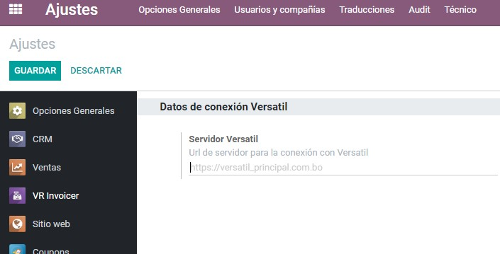
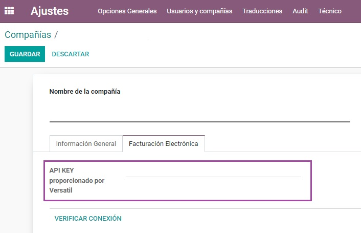
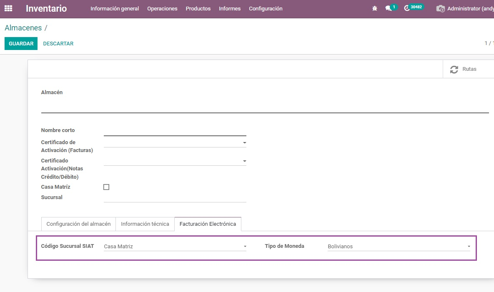
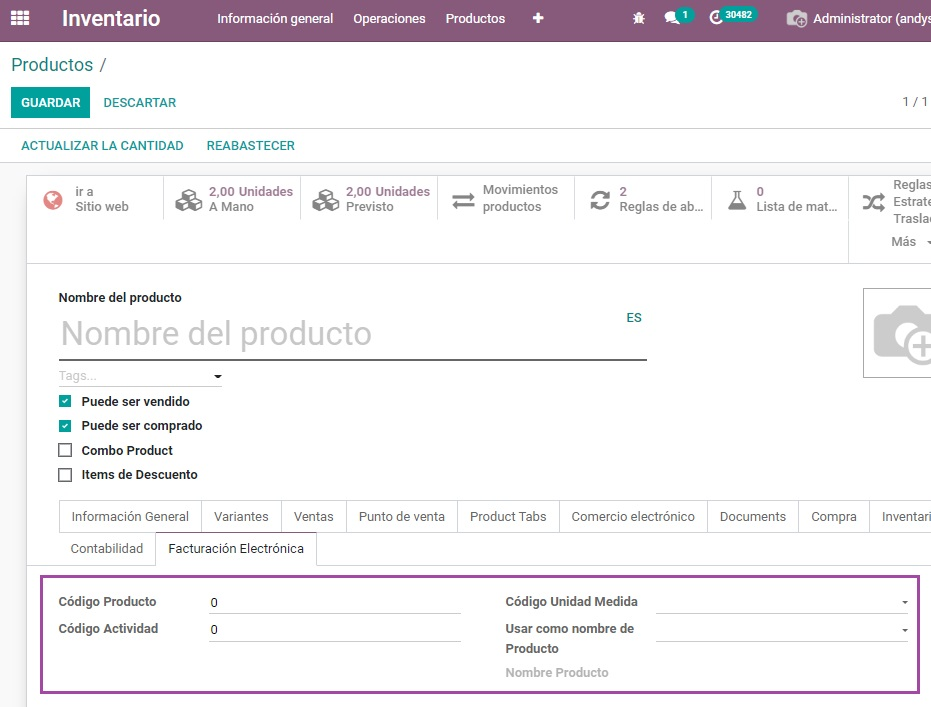
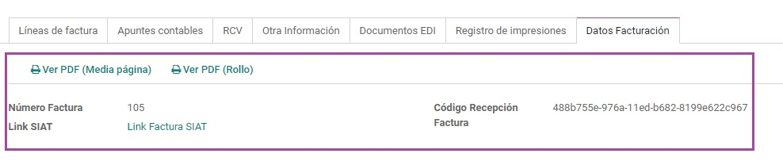

Configuración
-
Url servidor Versatil
Servidor al cual se conectará la aplicación para procesar todo lo referente a la facturación electrónica.
Ajustes → VR Invoicer
 -
API KEY
Código API-KEY proporcionado por Versatil para uso de los servicios proporcionados para la facturación.
Ajustes → Compañias
 -
Sucursal / Almacén
Se debe configurar el código de sucursal que se le asignará a cada almacen o sucursal como también el tipo de moneda que se utilizará.
Inventario → Almacenes
 -
Productos
Cada producto debe ser homologado, para esto se require los datos mostrados en la imagen.
- Código Producto: Código proporcionado por SIAT.
- Código Actividad: Código de actividad al que pertenece el producto (También proporcionado por SIAT).
- Código Unidad Medida: Unidad de medida que utiliza el producto.
- Usar como nombre de Producto: Seleccione un nombre de producto, la referencia interna o el código de barras.
- Nombre de Producto: Campo de solo lectura que muestra el nombre seleccionado.
Inventario → Productos

Facturación
-
Facturación exitosa
Una vez que la factura es procesada correctamente por SIAT, se habilita la pestaña "Datos Facturación" donde se muestran lo siguiente:
- Número Factura: El número asignado automáticamente en el servidor Versatil para esta factura y para esta sucursal.
- Código Recepción: Código enviado por SIAT como comprobante e identificador de la factura procesada.
- Link SIAT: Link que abre la página de impuestos con los datos de la factura procesada.
En caso de que se requiera ver o imprimir la factura con formato SIAT, se tienen dos opciones:
- PDF en formato Media página: Obtiene la factura en formato "Media página" desde el servidor y la abre en una pestaña nueva
- PDF en formato Rollo: Obtiene la factura en formato "Rollo" desde el servidor y la abre en una pestaña nueva
Ajustes → VR Invoicer
